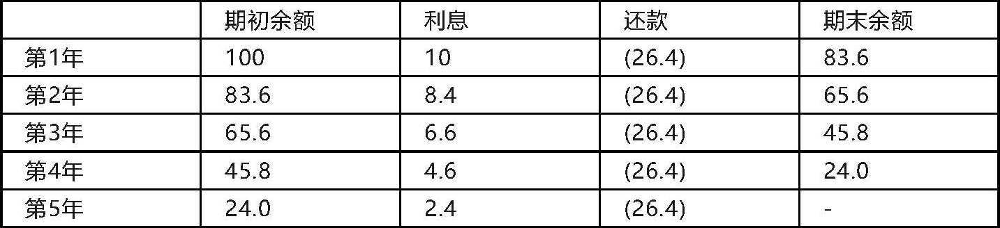
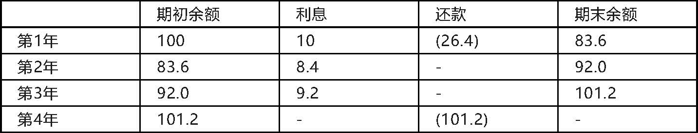
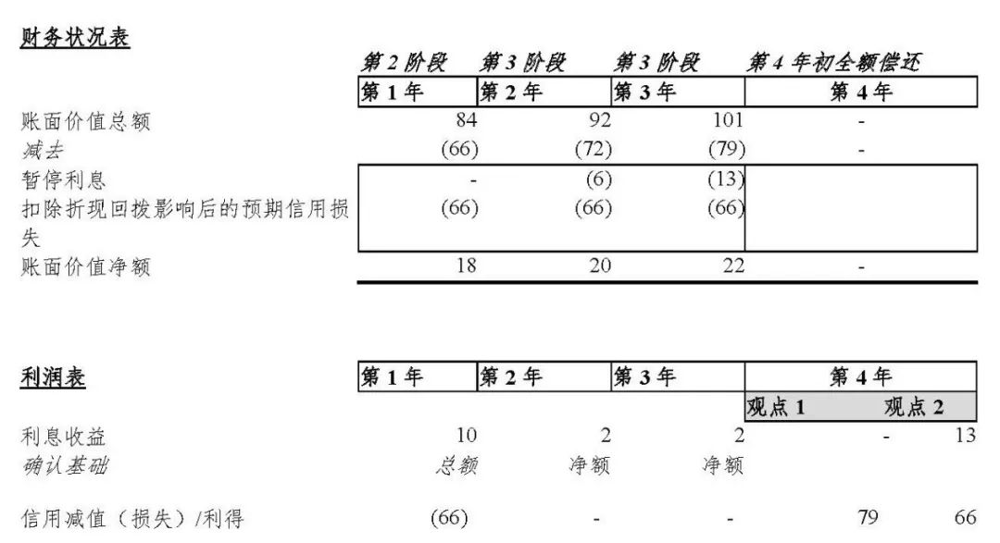

天职国际会计师事务所
新金融工具准则下已减值金融资产后续收回的处理
IFRIC撤销议题选注20190506
在2018年11月的会议中，IFRIC讨论了，在新金融工具准则的预期信用减值模型下，原已发生减值金融资产，在后续收回时的处理。在2019年3月的会议中，IFRIC对该问题作出了最终决议。
会议时间：2019年3月
议题：信用减值金融资产的消除（《国际财务报告准则第9号——金融工具》）
议题概要：
委员会收到咨询，询问有关主体在信用减值金融资产后续消除（例如，全额支付或不再具有信用减值）时，如何对计入损益的金额进行列报。
当金融资产已发生信用减值，《国际财务报告准则第9号》第5.4.1（2）段（注：①）要求，主体应采用“针对金融资产摊余成本的实际利率”来计算利息收入。这将导致以下二者差异：（1）针对信用减值金融资产账面价值总额采用实际利率计算的利息；以及（2）该资产已确认的利息收入。咨询问题询问，随着金融资产的消除，主体应将该差异列报为利息收入，还是应将其作为减值损失的转回列报。
《国际财务报告准则第9号》附录A将信用损失定义为“按原实际利率折现的、主体根据合同应收的所有合同现金流量与主体预期收取的所有现金流量之间的差额（即所有现金短缺）……”。附录A也将账面价值总额定义为“在针对任何损失准备作出调整前的金融资产的摊余成本。”委员会指出，根据《国际财务报告准则第9号》附录A的定义，账面价值总额、摊余成本及损失准备均为折现值，在报告期内，该金额的变动包括折现回拨的影响。
《国际财务报告准则第9号》第5.5.8段（注：②）要求主体“应将为把报告日的损失准备调整为按照本准则确认的金额而需确认（或转回）的预期信用损失金额，作为一项减值利得或损失计入损益。”
委员会注意到，根据《国际财务报告准则第9号》第5.5.8段，主体将损失准备调整为按照《国际财务报告准则第9号》确认的金额，作为预期信用损失的转回计入损益（如果该资产被全额支付则为零）。该调整金额包括该金融资产已发生信用损失期间减值准备的折现回拨的影响，这意味着，减值损失的转回可能超过在该资产存续期内已确认计入损益的减值损失。
委员会还注意到，《国际财务报告准则第9号》第5.4.1段规定了主体如何采用实际利率法计算利息收入。根据第5.4.1（2）段，主体将实际利率应用于金融资产的摊余成本，来计算已发生信用减值金融资产的利息收入，因此，此类金融资产的利息收入并未包含咨询问题所述的差异。
因此，委员会得出结论，在损益表中，主体应将咨询问题所述的差异，在已发生信用减值金融资产消除时，作为减值损失的转回进行列报（注：③）。
理事会得出结论认为，国际财务报告准则的要求，为主体针对咨询问题所述情况下，因已发生信用减值金融资产消除的预期信用损失转回的确认和列报，提供了充分的基础。因此，委员会决定不将该问题纳入其准则制定议程。
注：
①《国际财务报告准则第9号——金融工具》第5.4.1段：
“利息收入应当使用实际利率法计算。利息收入应通过将实际利率乘以金融资产的账面总额进行计算，但下列情况除外：
（1）所购买或源生的已发生信用减值的金融资产。对于此类金融资产，主体应针对初始确认后金融资产的摊余成本应用经信用调整的实际利率计算利息收入。
（2）并非所购买或源生的已发生信用减值的金融资产、但随后发生了信用减值的金融资产。对于此类金融资产，主体应在后续报告期间针对金融资产的摊余成本应用实际利率计算利息收入。”
②《国际财务报告准则第9号——金融工具》第5.5.8段：
“主体应将为把报告日的损失准备调整为按照本准则确认的金额而需确认（或转回）的预期信用损失金额，作为一项减值利得或损失计入损益。”
③咨询问题所述案例具体分析（STAFF PAPER Agenda ref 7 November 2018 Presentation of unrecognised interest following the curing of a credit-impaired financial asset (IFRS 9)）：
案例背景
一项摊余成本计量的金融资产，金额为CU100，在5年内每年分期偿还。该金融资产的实际利率是10%，每期偿还约为CU26。该金融资产的摊销如下表所示：

本案例假设：
（1）该金融资产在第1年末进入减值测试第2阶段；
（2）该金融资产在第2年开始进入减值测试第3阶段（即已发生信用减值）；
（3）该金融资产在第2年和第3年未收到还款；
（4）假设第2阶段和第3阶段确认的减值损失为CU66；
（5）暂停合同利息与损失准备分开列报，以说明损失准备与暂停合同利息之间的性质不同；
（6）在第4年年初，客户偿还了CU101.20，该金额为全部合同应付金额。
基于预期现金流量更新后的摊销如下表所示：

该金融资产第1-4年的会计处理结果如下：

咨询问题
当客户在第4年初全额偿还合同金额时，该已发生信用减值资产被视为已消除。咨询者询问，在如何对已确认的暂停利息CU13（第2年的CU6和第3年的CU7）进行列报。
案例分析
对于案例中金融资产全额收回当期的会计处理，存在两种不同的观点：
观点1.作为信用减值利得列报
观点1认为，当金融资产收回后，主体应在财务状况表中，以总额冲回预期信用损失，并计入损益表中的信用减值项目。在本案例中，即，在财务状况表中冲回CU79，包括初始减值准备CU66，和应计算未确认利息CU13；在损益表中，确认信用减值利得CU79。该观点将应计算未确认利息CU13的性质视为与减值准备类似。该观点的主要依据是《国际财务报告准则第9号》第5.5.8段、第5.5.14段等，以及“金融工具减值过渡资源组”（ITG）于2015年12月讨论的相关议题结论。
观点1意味着，第1-3年确认的减值准备为CU66，但第4年转回的信用减值金额为CU79，超过了原计提准备，从而产生了一项信用减值利得。
观点1认为，《国际财务报告准则第9号》的预期信用减值模式，不同于其他资产减值模型，如存货减值和《国际会计准则第36号——资产减值》范围内的资产减值。其他资产减值模型不允许确认一项减值利得，但预期信用减值模型可以产生一项减值利得。这是因为，其他资产减值模型是以历史成本计量模型为基础，故转回的减值不应超过原计提减值准备金额。
在观点1下，当该金融资产收回时的会计处理为：
确认收回的现金
借：现金----CU101
贷：金融资产账面价值总额----CU101
转回预期信用损失
借：预期信用损失----CU79
贷：信用减值损失/利得----CU79
观点2.可选择列报为利息收益
观点2认为，通过信用减值项目转回的减值准备金额仅为CU66，应扣除应计算未确认的利息CU13。应计算未确认的利息CU13，应确认为利息收益。这样，所转回的减值损失金额，与原计提的减值准备相等，不会产生信用减值利得。观点2的处理与其他资产减值转回的处理一致。
在观点2下，当该金融资产收回时的会计处理为：
确认收回的现金
借：现金----CU101
贷：金融资产账面价值总额----CU101
转回预期信用损失
借：预期信用损失----CU66
暂停利息----CU13
贷：信用减值损失/利得----CU66
利息收益----CU13
IFRIC的结论
基于议题概要所述理由，IFRIC最终采用了上述观点1的处理。
释：
在新金融工具准则下，针对本案例中，已发生信用减值金融资产，在后续收回（或不再减值）时，应当如何进行处理，存在两种不同观点：
（1）收回金额与已计提减值准备账面价值差额，全部作为信用减值损失/利得转回。此时，可能产生信用减值利得。
（2）应区分收回金额中的不同部分，以原计提减值准备金额为限，作为信用减值转回，超过部分作为利息收入确认。此时，不产生信用减值利得。IFRIC赞同观点（1）的处理。
根据IFRIC的讨论，金融资产预期信用减值模型，与其他资产（如存货、固定资产等）减值模型的处理不同。其他资产的减值模型是基于历史成本模型，因此，减值损失的转回，只能以原已计提减值准备为限，不应产生减值转回收益。金融资产预期信用减值模型，其减值损失的转回没有这个限制，可以产生减值转回收益。